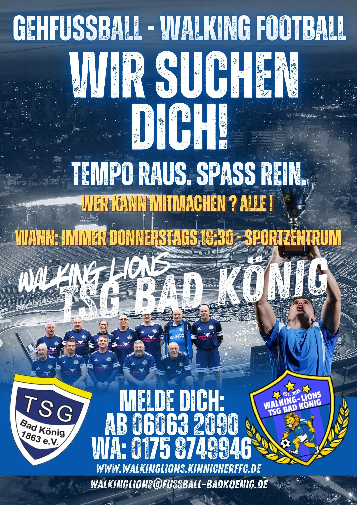

Gemeinschaft
Bei uns ist jede Einheit mehr als Training. Es geht um Zusammenhalt, Fairness, gegenseitige Rücksicht und gemeinsame Zeit auf dem Platz.
Die Walking Lions stehen für Gehfußball mit Freude, Teamgeist und Bewegung. Bei uns zählt nicht das Sprintduell, sondern das Zusammenspiel. Wer Lust auf Ball, Begegnung und regelmäßige Aktivität hat, ist willkommen.
Platzhalter für Euer echtes Logo. Sobald die Bilddatei vorliegt, kann hier direkt das Original-Logo eingebunden werden.
Walking Lions ist ein offenes Gehfußball-Angebot für alle, die Fußball lieben und dabei bewusst auf gesundes, kontrolliertes Spiel setzen. Im Mittelpunkt stehen Bewegung, Miteinander und die Freude daran, weiter aktiv Teil einer Mannschaft zu sein.
Bei uns ist jede Einheit mehr als Training. Es geht um Zusammenhalt, Fairness, gegenseitige Rücksicht und gemeinsame Zeit auf dem Platz.
Gehfußball bietet einen niedrigschwelligen Einstieg in regelmäßige Aktivität. Technik, Übersicht und Passspiel rücken stärker in den Vordergrund.
Ob nach langer Pause, als Ergänzung oder als neue Form des Fußballspielens: Entscheidend ist die Lust, mit anderen in Bewegung zu bleiben.
Gehfußball – international oft Walking Football genannt – ist eine angepasste Fußballform. Sie setzt auf kontrollierte Bewegungen, flaches Passspiel und einen fairen Rahmen, der das Mitmachen für viele Menschen leichter macht.
Im offiziellen Umfeld wird Walking Football typischerweise auf einem kleineren Feld gespielt. Der Ball bleibt grundsätzlich flach, Abseits gibt es nicht und Rennen ist nicht erlaubt. Dadurch stehen Übersicht, sauberes Passspiel und Teamarbeit im Mittelpunkt.
Verbände wie DFB und HFV stellen beim Gehfußball besonders die Themen Gesundheit, soziale Kontakte, Teilhabe und Freude an der Bewegung heraus. Genau darum geht es auch bei den Walking Lions.
Keine Hektik, keine Sprints, keine harten Zweikämpfe. Der Charakter des Spiels bleibt fußballerisch, aber bewusst rücksichtsvoll.
Gehfußball ist besonders interessant für ältere Spielerinnen und Spieler, Wiedereinsteiger oder Menschen, die weiterhin Fußball erleben möchten.
Walking Football ist längst in den Verbänden angekommen. Es gibt Qualifizierungen, Vereinsangebote und Turniere – auch in Hessen.
Unser Einstieg ist bewusst unkompliziert. Vorbeikommen, reinschnuppern, mitkicken.
Donnerstag · 18:30 bis 20:00 Uhr
Neue Kicker und Kickerinnen sind willkommen. Ein Probetraining ist jederzeit möglich.
Frauen ab 40, Männer ab 50. Wer jünger ist und trotzdem Interesse hat, kann sich ebenfalls gerne melden.
Du hast früher gespielt, willst wieder anfangen oder suchst eine faire und angenehme Art, Fußball zu erleben? Dann komm zu den Walking Lions. Vorkenntnisse helfen, sind aber keine Voraussetzung.
Der aktuelle Flyer ist direkt eingebunden und kann auf der Unterseite prominent dargestellt werden. Für den Upload solltest Du die Bilddatei zusammen mit der HTML-Datei in denselben Ordner legen oder den Pfad entsprechend anpassen.

Eingebundene Datei: flyerwalking2026.jpg. Beim Hochladen auf walkinglions.kinnicherffc.de muss die Bilddatei im gleichen Verzeichnis wie diese HTML-Datei liegen, sofern Du den Dateipfad nicht änderst.
Die Kontaktangaben können direkt an Eure tatsächlichen Daten angepasst werden.
Walking Lions
Bad König
E-Mail: walkinglions@kinnicherffc.de
WhatsApp: Link ergänzen
Dieser Onepager ist bewusst neutral gehalten und verzichtet im sichtbaren Bereich auf Bezüge zum Fanclub. Er kann als eigenständige Unterseite unter walkinglions.kinnicherffc.de verwendet werden.